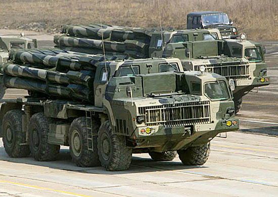

300-мм дальнобойная реактивная система залпового огня 9К58 «Смерч»
Предназначена для поражения живой силы, расположенной открыто или находящейся в укрытиях, вооружения и военной техники в районах сосредоточения, пунктов управления, артиллерийских и минометных батарей, складов боеприпасов и других целей.
| Тактико-технические характеристики | |
|
Расчет, чел..
|
4 |
|
Масса, т |
43.7 |
|
Дальность стрельбы, км: максимальная минимальная |
- 70 20-25 |
|
Время полного залпа, с |
Не более 25 |
|
Количество направляющих, шт. |
12 |
|
Масса снаряда, кги |
800 |
|
Угол возвышения, град. |
от 0 до +55 |
|
Угол горизонтального наведения, град. |
60 |
|
Базовое шасси |
МАЗ-543М |
|
Максимальная скорость движения по шоссе, км/ч |
60 |